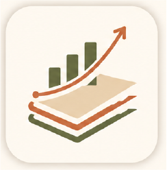

ESOP Earnings and Tax Calculator
A clearer way to think about ESOP value, taxes, and decision paths.
Silkboard is a focused financial utility built to help people understand the real outcomes of their ESOPs. ESOP decisions are often emotionally important but practically confusing. Between grants, strike prices, taxes, exercise costs, and different sale choices, it can be difficult to see what actually happens to your money.
Silkboard explores a simpler interface for that problem. It is designed to make financial scenarios easier to compare and easier to reason about without overwhelming the user with unnecessary complexity.
People with ESOPs often ask very practical questions: what do I keep after tax, what changes if I sell for cash, what happens if I sell to cover, and how do different assumptions affect the final outcome. Existing tools can feel too spreadsheet-heavy or too opaque.
Silkboard is meant to bridge that gap. It aims to give users a more human, readable, and decision-friendly way to understand the numbers.
Silkboard reflects my interest in turning complex, important decisions into interfaces that feel calmer and more understandable. I shaped the product concept, naming direction, UX flow, screen priorities, and overall design thinking. The implementation was then developed with AI assistance.